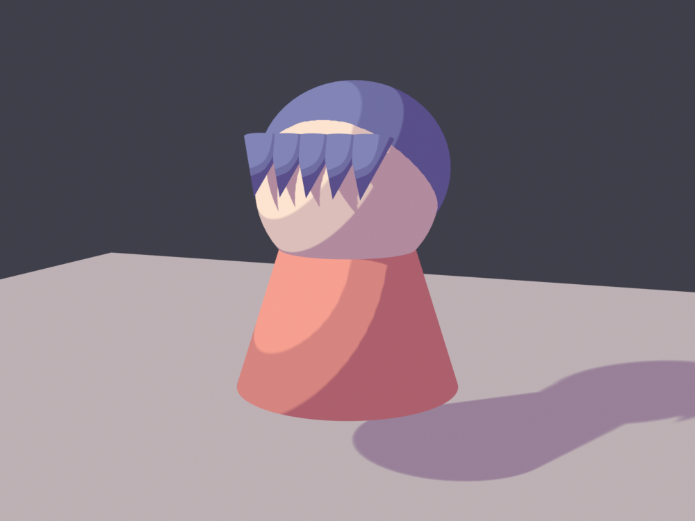
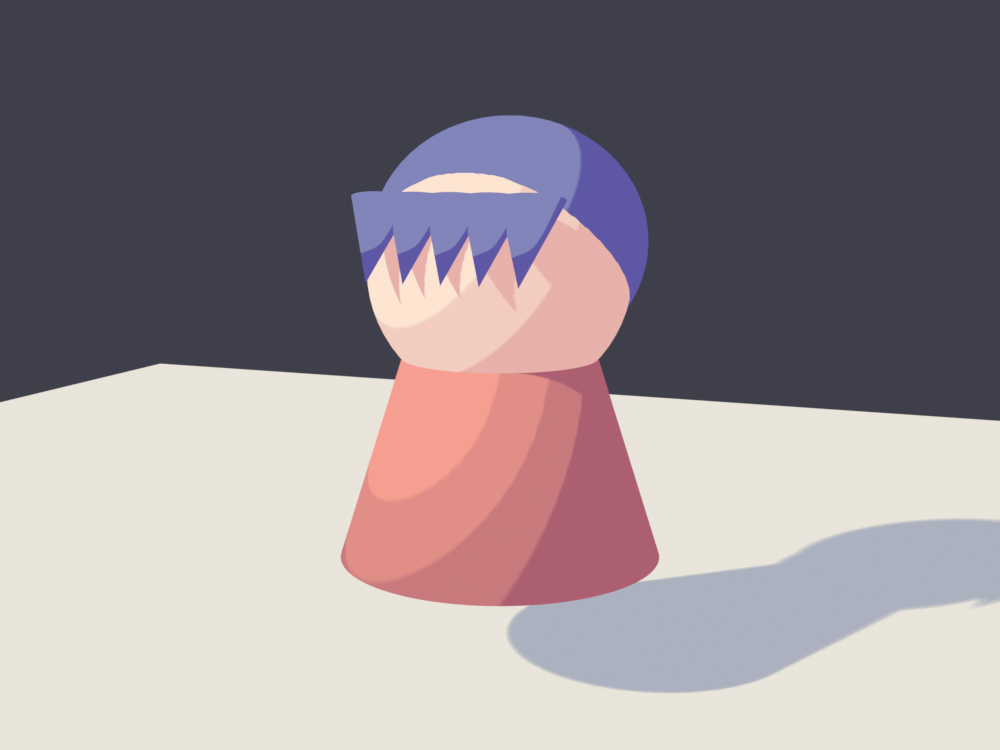
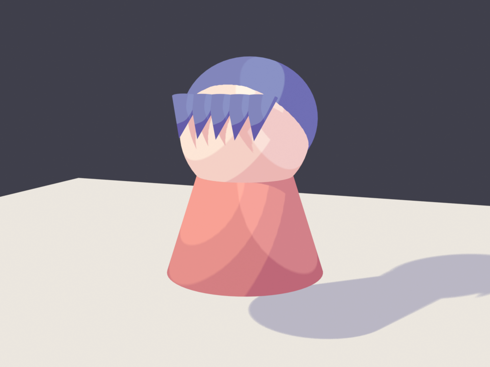
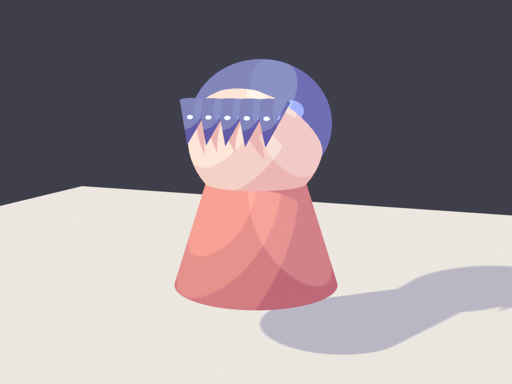

Products › BaseNode Packs › Toon & Anime › Tutorial: Anime portrait
Anime portrait
A small bust shaded the way an anime frame is painted: a few flat tones, a coloured shadow, a hard highlight in the hair and a rim of light on its edge.
One material graph does it, cel, and each light of the scene says how it wants to be drawn.

Before you start
You need three things:
- Blender 5.3, with EEVEE:
celis built on the lighting nodes that are new in 5.3, and Cycles does not run them. - The Base Node add-on, version 1.0.0 or later.
- The Toon & Anime pack, sold by the author of Base Node apart from the open source project. It carries the module
cel. The steps on this page are free to read, copy and change; the module they call is not.
| Module | Pack | What it gives |
|---|---|---|
cel | Toon & Anime | The material cel: tones, shadow colours, highlight and rim, cut light by light. |
toon | free, in the add-on | The light settings cel shares with it: toon_threshold, toon_intensity, toon_rim. |
How a material sees one light at a time in Blender 5.3 is told in the free tutorial Toon lights. You do not need it here, but it says what cel does inside.
Every block below is a complete .bn file, its code beside the nodes it builds. Drag the file icon of a block onto empty space in Blender's 3D Viewport and keep Instantiate the Example: a new object carries portrait at the 3D cursor, with its four materials. Or press the copy button of the block, open a Geometry Node editor, press Ctrl+Shift+V and pick Add as Modifier.
The lights are not in the files: they belong to your scene, and each step says which ones to add. Set the viewport to Rendered, and the View Transform of the scene (Render Properties, Color Management) to Standard: a flat colour stays the colour you gave it.
1. Three tones
Add a sun, strength 1, from the front left and a little above, pale warm. Then the file:
step1_tones.bn: Skin, portrait, bust, Hair, Cloth, Floor
- One call per material. Each material returns
celwith its owncolor. Everything else takes the defaults of the node: three tones, a mauve shadow. - Where the tones fall.
celasks the light how much it faces the surface, 0 to 1. Underthresholdthe surface is in shadow; above it, the rest of the range is cut intobands - 1equal steps up to the full colour. - The shadow tone. Where no light reaches, the surface is
colortimesshadow. A surface in full light iscoloritself, whatever the shadow.

2. A style per material
Same sun. Each material now says how it wants to be cut:
step2_materials.bn: Skin, portrait, bust, Hair, Cloth, Floor
- Skin. Three tones and a warm pink shadow. A low
threshold, 0.15, lets the light reach far round the face: a face in anime is rarely half dark. - Hair and floor. Two tones, light and shadow, nothing between: the hard cut of a cel. A deep violet under the hair, a cold blue on the floor.
- Cloth. Four tones: a shirt has folds, and the extra steps draw them.

Try: set bands to 8.0 on the shirt: the cut melts back into a smooth shading.
3. Each light its shadow
The file of step 2, unchanged. This time the lights speak, through custom properties: select a light, Object Properties, Custom Properties, New.
- On the warm sun:
cel_shadow, a colour,(0.16, 0.06, 0.04), a dark brown. Set its Subtype to Color in the property's settings. - Add a second sun, strength 1, from the right, blue
(0.5, 0.62, 1.0). Give itcel_bandsat2.0,toon_thresholdat0.55,toon_intensityat0.6andcel_shadowat(0.12, 0.1, 0.22).
- A light's own shadow. Where a light does not reach, it still adds its
cel_shadow, times the surface's colour. The warm sun leaves a warm shadow; the blue one leaves a cold one on the side it misses. - A light's own cut. The blue sun cuts two tones whatever the material says, starts higher, at 0.55, and lights at 0.6 of its strength: a narrow fill on the right edges.
- A light without them. A property a light does not have takes the value of the node: the material's
bands, itsthreshold, no shadow colour.

4. A highlight in the hair
The same two suns. The hair gets a highlight:
step4_highlight.bn: Hair, portrait, bust, Skin, Cloth, Floor
- Cut, not blurred.
highlightis how large the highlight is, 0 for none.celasks each light for its glossy reflection, ofroughness0.2, and cuts it as hard as the tones: a flat shape, the way hair is painted. - Its colour. The highlight is the light's colour times
highlight_color, a pale blue: it does not take the hair's colour. - Per light. A light can set its own size with
cel_highlight; at 0 it makes none.

5. A rim light
The file of step 4. Add a third sun, orange (1.0, 0.62, 0.35), almost level, from behind the bust on the left. Two custom properties on it: toon_threshold at 0.3 and toon_rim at 1.0.
- Its own colour. A rim light adds its band in its own colour, not multiplied by the surface: orange on the blue hair stays orange, where an ordinary light would turn it a dull grey.
- Only the edges. It comes from behind: it reaches the top of the hair and the left edge of the body, the sides the camera barely sees.
The knobs
| Where | Name | What it does |
|---|---|---|
node cel | color, shadow | The surface's colour in full light, and what it is multiplied by where no light reaches. |
node cel | bands, threshold, softness | How many tones, where the first lit one starts, how wide their edges are: for the lights that do not say. |
node cel | highlight, highlight_color, roughness | The size of the hard highlight (0: none), its colour, and how spread the reflection it is cut from. |
node cel | intensity | How strong a light without toon_intensity lights. |
| light | cel_bands | How many tones this light cuts, 2 to 8. |
| light | cel_shadow | The colour this light leaves where it does not reach: a colour property. |
| light | cel_highlight | The size of this light's highlight; 0 for none. |
| light | toon_threshold, toon_intensity, toon_rim | Where its first tone starts, how strong it lights, and 1 to make it a rim light: the settings of the free module toon. |
Take it to Blender
The finished bust, in one file. Drag the card onto empty space in Blender's 3D Viewport and keep Instantiate the Example, then add the three lights of step 5. A click on the card downloads the file.
The steps before it: